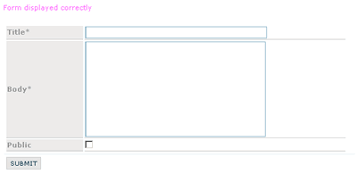

DataForm
DataForm is a form helper and can be used to retrieve, update or insert new records directly without sql syntax.
It is a template based component.
Dataform is ancestor of DataFilter & DataEdit
Note, this component is based upon fields. Fields are a collection of classes to manage single items of a form.
Sample:
constructor:
DataForm($process_uri, $dataobject)
params:
- string $process_uri (can be null) is the uri that trig the process action.
If it's used in a controller at this uri: "controller/method"..
it must have one more segment (for example "controller/method/process"). - mixed $dataobject (can be null), a DataObject instance, or a string: the database "tablename"
DataForm & Fields:
In a DataForm you can append fields (inputs, extareas etc..) by declaring custom properties of DataForm instance and passing fields instances:
It is not important the property name, because it is just a pointer to the field.
The DataForm sniff all properties and autodetect fields.
Each field can have rules and callbacks (derived from CI Validation class):
For Each field, you can change some main properties, and the group param can be used to group/separate fields in the DataForm layout:
Field visibility can be limited to some DataForm status:
main methods:
button($name, $caption, $action, $position="BL")
append an html button.
params:
- string $name, button name&id
- string $caption, button caption
- string $action, the onclick event action
- string $position, position of button, can be: "TR" (tor-right), "BL" (bottom-left), "BR" (bottom-right)
submit($name, $caption, $position="BL")
append an html submit button.
params:
- string $name, button name&id
- string $caption, button caption
- string $position, position of button, can be: "TR" (tor-right), "BL" (bottom-left), "BR" (bottom-right)
script($script, $status="create")
append javascript statement (simply a <script>$script</script> code).
params:
- string $script, the javascript code
- string $status, the code is added only when DataForm fields have this status
on_show()
return a boolean: if the DataForm status is "show" or not.
on_error()
return a boolean: if the DataForm status is "error" (validation not passed) or not.
on_success()
return a boolean: if the DataForm status is "success" (procedded and validation passed) or not.
build()
build and eventually process the form.
it do not prepare an html output but just run the build method on each field.
then you can retrieve field output as: $form->field->output. and you can display and organize your custom form output.
build_form()
like build() but it prepare/build a global html output.
output:
output
string, the built html form (only if you have excecuted the build_form() method before).